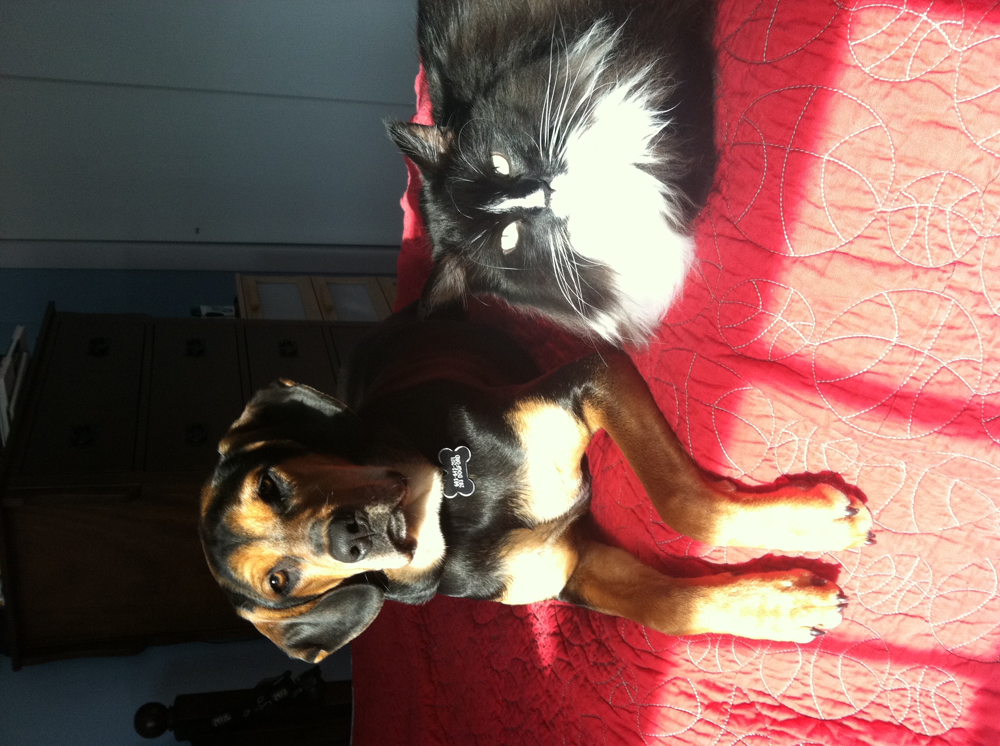

Miscellaneous Facts
Home Page
Introduction
Favorite Hobbies
Some more interesting stuff about me:
- While in Mburo National Park in Uganda as a baby, I was almost mauled by a hippo. Luckily, I was lying atop a truck and didn't notice anything.
- My mother says I have the memory of an elephant. I once memorized the Cat in the Hat and recited in full to my family.
- I have two pets, a cat named Geneva and a dog named Annie.
- I broke my collar-bone after my brother pushed me onto a concrete floor.
- I am definitely a carnivore. Some of my favorite things to cook are stir-fried pork and grilled steak.
